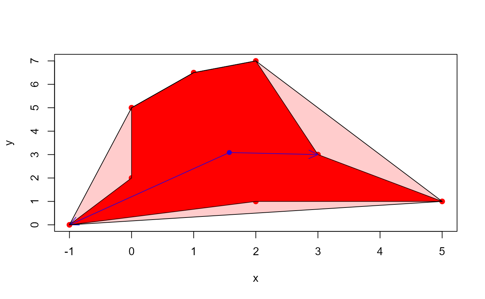
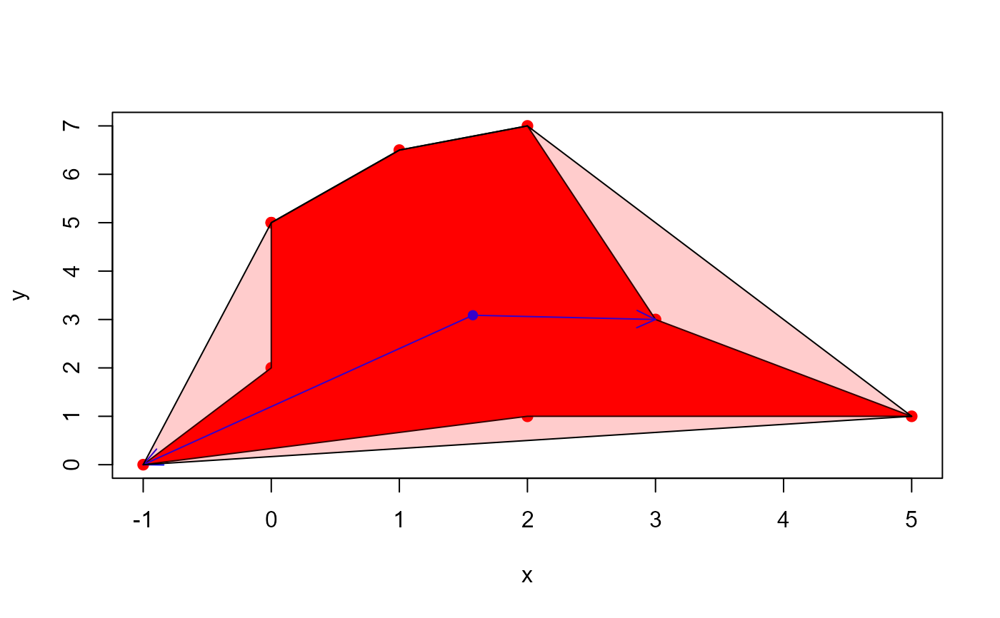

conv_hull()Compute convex hull of a set of points.poly_area()Compute the area of a polygon given by the vertices in the vectorsxandy.poly_mass()Compute the center of mass of a polygon given by the vertices in the vectorsxandy.poly_spline()Smooths a polygon contour.plot_contour()Plot contour lines.plot_ellipse()Plots an ellipse that fits the major and minor axis for each object.
Usage
conv_hull(x, y = NULL, closed = TRUE)
poly_area(x, y = NULL)
poly_mass(x, y = NULL)
poly_spline(x, y = NULL, vertices = 100, k = 2, ...)
plot_contour(x, y = NULL, id = NULL, col = "black", lwd = 1, ...)
plot_mass(
x,
y = NULL,
id = NULL,
arrow = TRUE,
col = "black",
cex = 1,
lwd = 1
)
plot_ellipse(object, id = NULL, col = "black", lwd = 1)Arguments
- x, y
Coordinate vectors of points. This can be specified as two vectors (
xandy), or a 2-column matrixx. Ifxis a list of vector coordinates the function will be applied to each element usingbase::lapply().- closed
If
TRUE(default) returns the vector of points of a closed polygon, i.e., the first point is replicated as the last one.- vertices
The number of spline vertices to create.
- k
The number of points to wrap around the ends to obtain a smooth periodic spline.
- ...
For
plot_contour()andplot_ellipse()further arguments passed on tographics::lines().For
plot_mass(), further arguments passed on tographics::points().
- id
The object identification (numeric) to plot the contour/ellipse. By default (
id = NULL), the contour is plotted to all objects- col, lwd, cex
The color, width of the lines, and size of point, respectively.
- arrow
If
TRUE(default) plots two arrows connecting the center of mass to the minimum and maximum radius.- object
An object computed with
analyze_objects().
Value
conv_hull()andpoly_spline()returns a matrix withxandycoordinates for the convex hull/smooth line in clockwise order. Ifxis a list, a list of points is returned.poly_area()returns adouble, or a list ifxis a list of vector points.poly_mass()returns adata.framecontaining the coordinates for the center of mass, as well as for the maximum and minimum distance from contour to the center of mass.plot_contour(),plot_mass(), andplot_ellipse()return aNULLobject.
Details
poly_area() computes the area of a polygon given a set of x and y
coordinates using the Shoelace formula, as follows (Lee and Lim, 2017).
$$A=\frac{1}{2}\left|\sum_{i=1}^{n}\left(x_{i} y_{i+1}-x_{i+1}
y_{i}\right)\right|$$, where x and y are the coordinates which form the
corners of a polygon, and n is the number of coordinates.
References
Lee, Y., & Lim, W. (2017). Shoelace Formula: Connecting the Area of a Polygon and the Vector Cross Product. The Mathematics Teacher, 110(8), 631–636. doi: 10.5951/mathteacher.110.8.0631
Examples
# \donttest{
library(pliman)
# A 2 x 2 square
x <- c(0, 0, 2, 2, 0)
y <- c(0, 2, 2, 0, 0)
df <- data.frame(x = x, y = y)
plot(df)
with(df, polygon(x, y, col = "red"))
poly_area(x, y)
#> [1] 4
poly_area(df)
#> [1] 4
# center of mass of the square
cm <- poly_mass(df)
plot_mass(cm)
# The convex hull will be the vertices of the square
(conv_square <- conv_hull(df))
#> x y
#> 4 2 0
#> 1 0 0
#> 2 0 2
#> 3 2 2
#> 4.1 2 0
plot_contour(conv_square,
col = "blue",
lwd = 6)
 poly_area(conv_square)
#> [1] 4
############# Example with a polygon#############
x <- c(0, 1, 2, 3, 5, 2, -1, 0, 0)
y <- c(5, 6.5, 7, 3, 1, 1, 0, 2, 5)
df_poly <- data.frame(x = x, y = y)
# area of the polygon
poly_area(df_poly)
#> [1] 18
plot(df_poly, pch = 19, col = "red")
with(df_poly, polygon(x, y, col = "red"))
# center of mass of polygon
# arrows from center of mass to maximum and minimum radius
cm <- poly_mass(df_poly)
plot_mass(cm, arrow = TRUE, col = "blue")
# vertices of the convex hull
(conv_poly <- conv_hull(df_poly))
#> x y
#> 5 5 1.0
#> 7 -1 0.0
#> 9 0 5.0
#> 2 1 6.5
#> 3 2 7.0
#> 5.1 5 1.0
# area of the convex hull
poly_area(conv_poly)
#> [1] 24
with(conv_poly,
polygon(x, y,
col = rgb(1, 0, 0, 0.2)))

# }
poly_area(conv_square)
#> [1] 4
############# Example with a polygon#############
x <- c(0, 1, 2, 3, 5, 2, -1, 0, 0)
y <- c(5, 6.5, 7, 3, 1, 1, 0, 2, 5)
df_poly <- data.frame(x = x, y = y)
# area of the polygon
poly_area(df_poly)
#> [1] 18
plot(df_poly, pch = 19, col = "red")
with(df_poly, polygon(x, y, col = "red"))
# center of mass of polygon
# arrows from center of mass to maximum and minimum radius
cm <- poly_mass(df_poly)
plot_mass(cm, arrow = TRUE, col = "blue")
# vertices of the convex hull
(conv_poly <- conv_hull(df_poly))
#> x y
#> 5 5 1.0
#> 7 -1 0.0
#> 9 0 5.0
#> 2 1 6.5
#> 3 2 7.0
#> 5.1 5 1.0
# area of the convex hull
poly_area(conv_poly)
#> [1] 24
with(conv_poly,
polygon(x, y,
col = rgb(1, 0, 0, 0.2)))

# }